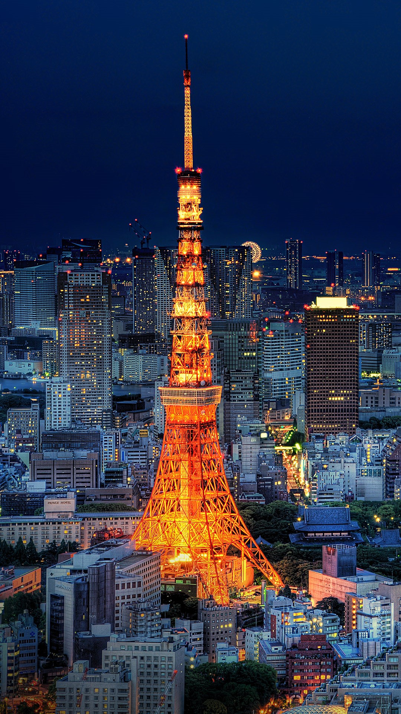

Explore Tokyo Attractions

Tokyo Tower
An iconic symbol of Japan's post-war rebirth. Stunning views of the city await!

Sensō-ji Temple
Tokyo's oldest temple, offering a glimpse into traditional Japanese culture.

Shibuya Crossing
Experience the busiest pedestrian crossing in the world in the heart of Tokyo.